k-Day 045｜大風
早上七點起床，看氣象下午兩點左右會開始刮大風。風速40km/h，西北風，陣風風速高達70km/h。重新安排行李配重，目標是不要被吹飛或者被卡車亂流捲進輪胎下。
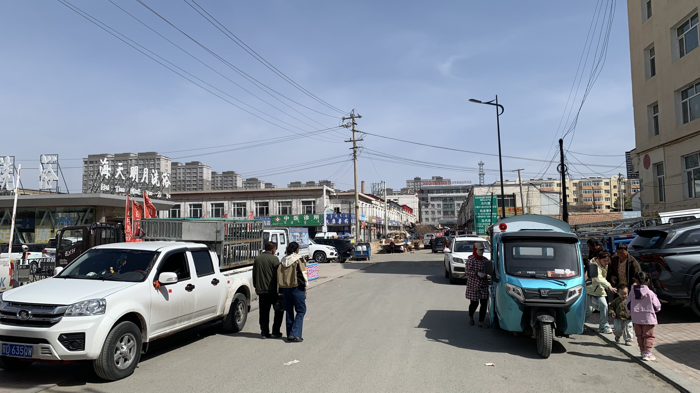
為了避免昨天拉肚子的窘境，等到早上10點上完廁所再退房，廣場上已頗為熱鬧。
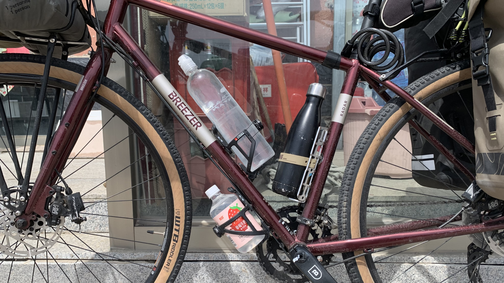
下樓到超商買水，把所有的水壺裝滿，再多買一瓶備用。保守一點今天的目標是55公里外的達里諾鎮，明後兩天風速可能大到無法騎車，至少要找個能補給過夜的地方。
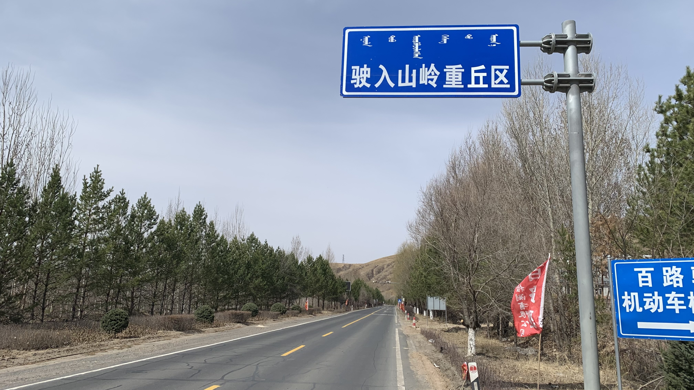
出了城鎮很快開始爬坡，告示牌也很直白的說接下來將進入山嶺重丘區。
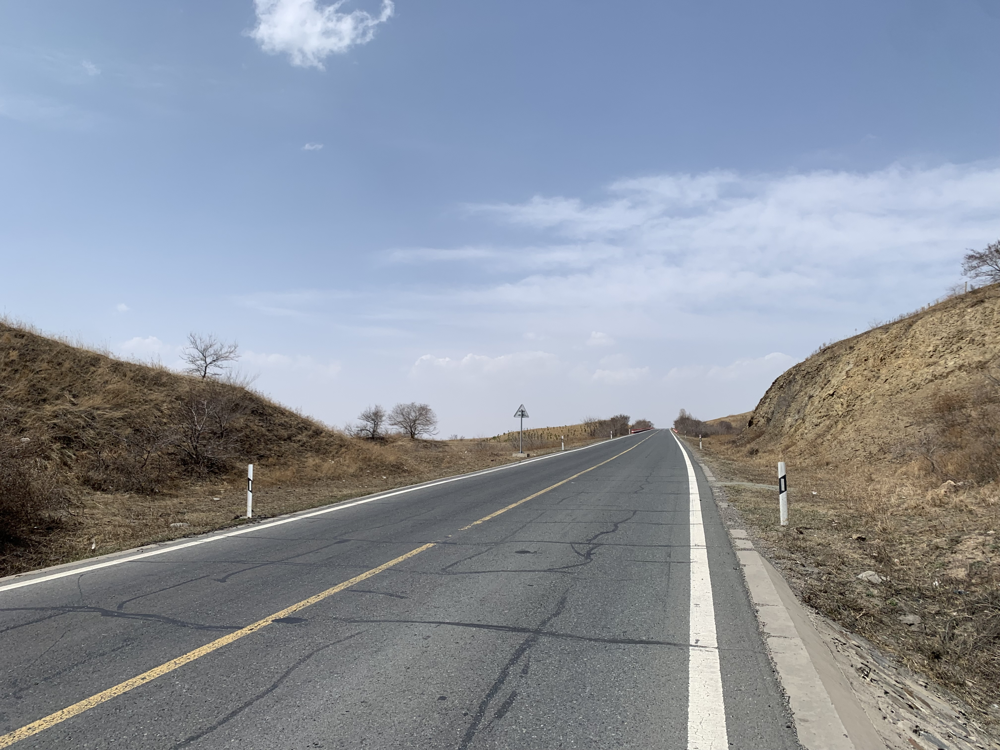
今天爬坡感覺頗輕鬆，發現側風轉了方向，從斜後方推著我往上爬。
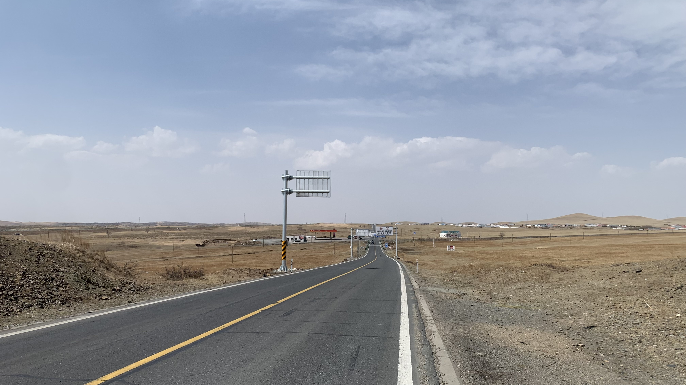
一下坡眼前是一片真正的草原！
實在太興奮了，腦中出現還珠格格的主題曲。
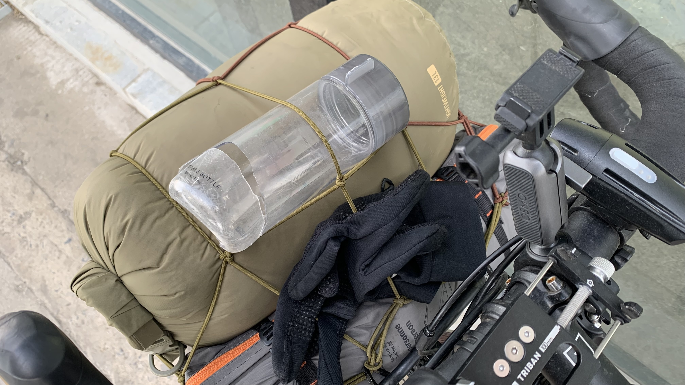
趁著風向正確，一路在草原上飆車，突然聽到後方啪地一聲，回過頭看，大創水壺及裡面的350ml飲水就這樣裂在柏油路上。牽著車回頭拾起水壺屍體，帶著他到了下一個加油站丟棄。
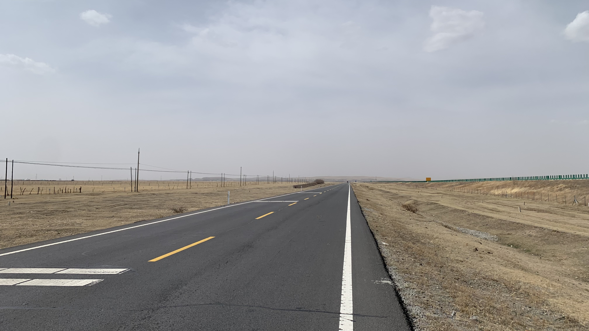
約莫11:30，稍微感覺到背後的順風正在轉向。加緊腳步多趕一些路，風越來越強，到中午12點已經吹得我左搖右晃。
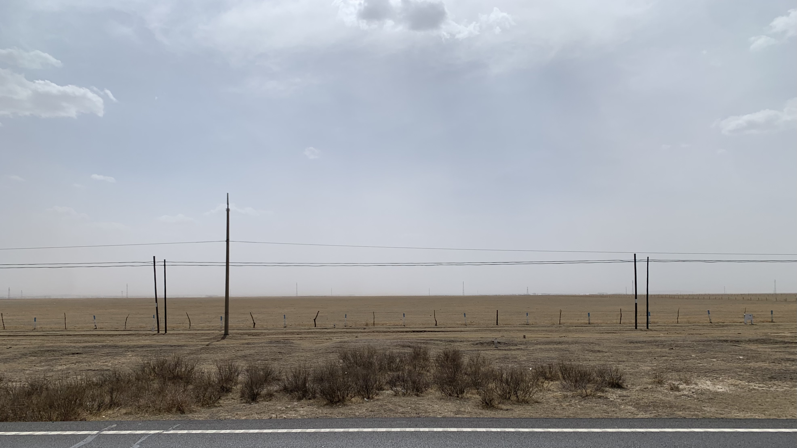
左側是風來的地方，一望無際的空曠，連根草都沒長出來。加速了幾百公里的風不斷撞在我身上、車上和行李上。大概是下午一點左右，一輛卡車經過，我和二十三號一起飛離地面。距離城鎮還有五公里，小心翼翼的推著車前進，每當有車輛經過就抓著車蹲低穩住重心。
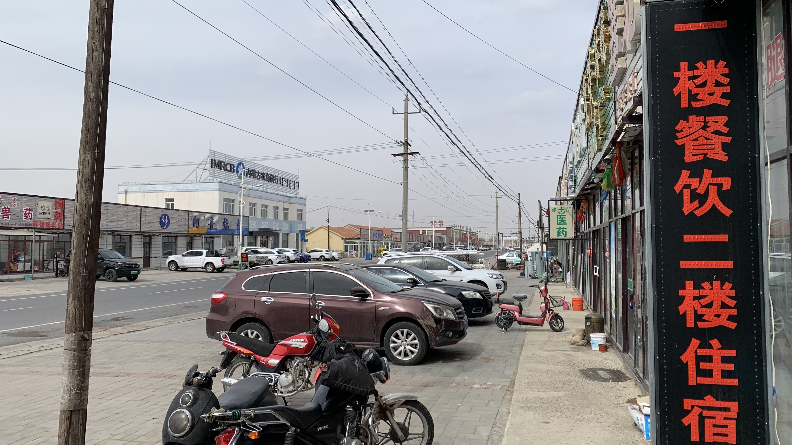
走了一小時，兩隻膝蓋已經相當酸痛。下午兩點，在真正的風暴來臨之際抵達達里諾，趕緊走進餐廳避風。
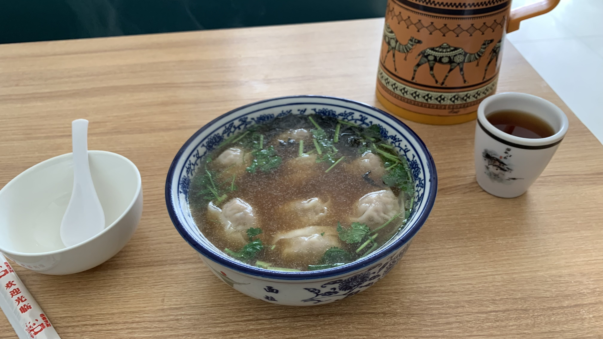
低頭吃著餛飩，進來一位貌似熟客的司機，開口就跟老闆說：「風好大，起風了。」原來司機大哥也是感覺得到風嗎？
吃飽後在街上找住處，晃了一下，看到對面有間日光棚內堆著木製傢俱的民宿，不知為何覺得對味。
才剛靠近門口，主人已出來迎接。原來是把我當成剛預定的客人。
民宿主人看來很熱情，帶我看房間的時候問我：「沒有看過這麼大的風吧。」
雖然台灣也有颱風，但今天的處境大概是發布陸上颱風警報，我還跑到花東海岸騎自行車的概念。問了老闆：「這風會吹多久呢？」
「大概三、四天吧。」
三、四天？我預期的回答是三個小時啊！
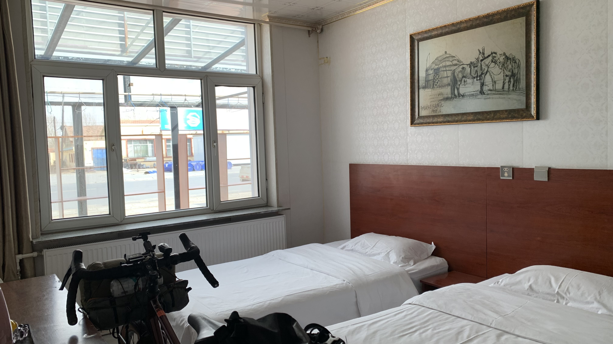
只能先在此住下再作打算。房間是雙人房，二十三號也可以進屋。
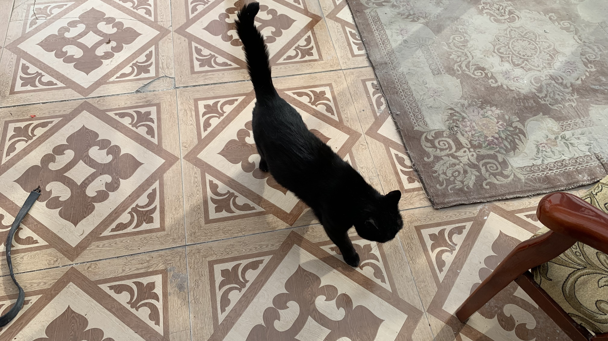
有隻黑貓在腳邊悠閒晃蕩，跟陽光棚外的大風形成對比。問了老闆「他叫什麼名字？」
「他就叫咪咪」老闆說。
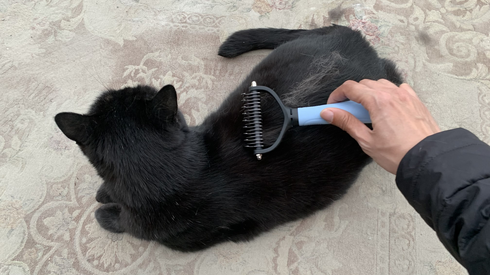
咪咪相當親人，不但給摸還給刷毛。有貓有棚，是很好的處境。至於明天的風，明天再面對吧。
今日花費： 飲料 5、餛飩 18 、住宿 80元